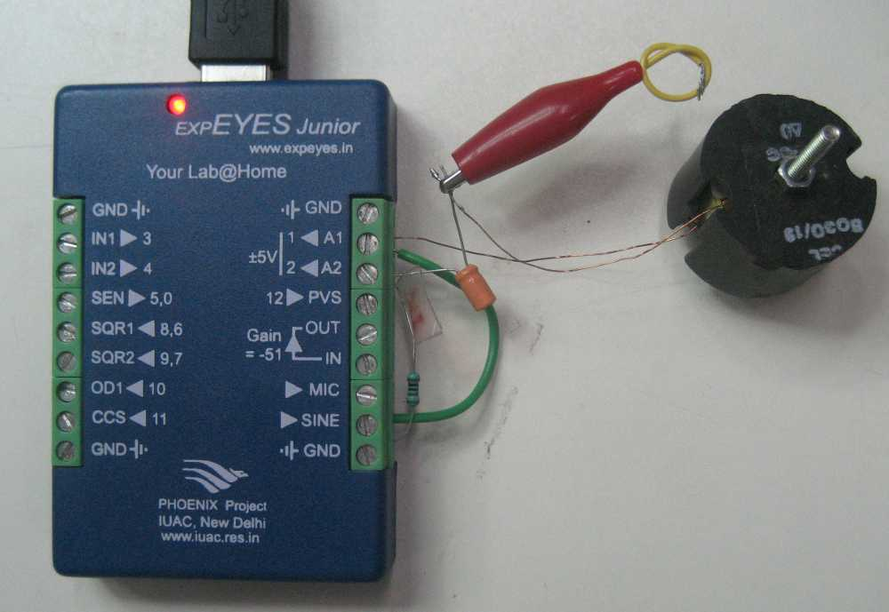
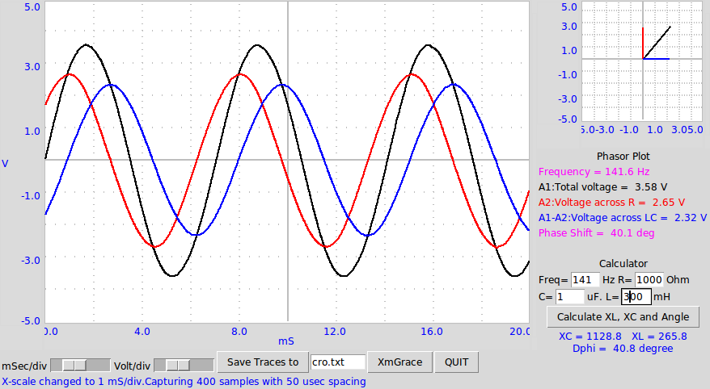

ExpEYES can be used to study the effect of resistive, inductive and capacitive elements in an AC circuit. L,C and R are connected in series. The total voltage and the voltage across the resistor are measured as a function of time. The voltage across LC is obtained by subtracting the voltage across R from the total. The phase relationships and the vector diagrams are graphically displayed.
Resistor = 1000 Ohm, Inductor = 300 mH, 5Ohms , Capacitor = 1 uF
Phase shift calculated using the above values is 40.8 deg (calculator on the right bottom side) and the measured Phase shift is 40.1 deg, well within the tolerance values of the components.
 